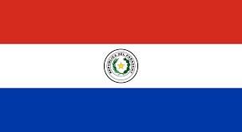
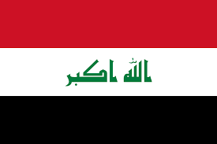
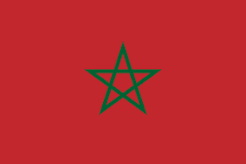
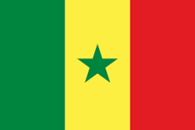
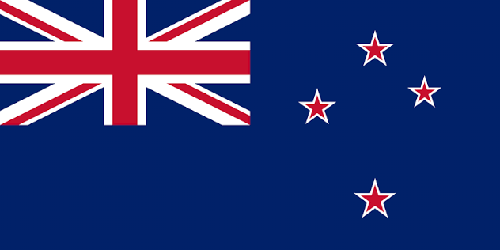

¿De qué se trata el Mundial de 2026?
La Copa Mundial de la FIFA 2026 es la vigesimotercera edición del torneo y se desarrolla conjuntamente en Canadá, Estados Unidos y México entre el 11 de junio y el 19 de julio de 2026. Esta cita marca el hito geopolítico y organizativo más masivo en la historia del balompié, siendo la primera vez que el mayor evento futbolístico del planeta es coorganizado por tres naciones simultáneamente. Bajo una propuesta que busca celebrar la diversidad y la unión del continente norteamericano, el torneo destaca por el uso de sedes con infraestructuras monumentales y de altísimo nivel logístico.
A nivel institucional y reglamentario, la edición de 2026 introduce la revolución competitiva más grande de la era moderna: la expansión oficial a 48 selecciones participantes, dejando atrás el formato de 32 equipos vigente desde 1998. El sistema de competencia reestructurado organiza a los conjuntos en 12 grupos de 4 equipos cada uno, clasificando a los dos primeros de cada zona y a los ocho mejores terceros a una fase eliminatoria inédita que inicia en una ronda de dieciseisavos de final. Asimismo, se profundiza el despliegue del Árbitro Asistente de Video (VAR) y la tecnología del fuera de juego semiautomatizado para garantizar la justicia deportiva en un calendario extendido.
En el plano estrictamente futbolístico, el torneo se disputa en territorio norteamericano con la máxima expectativa global por ver quién heredará el trono mundial. Debido al estado actual del torneo, el desenlace deportivo y el podio definitivo se encuentran en desarrollo.
Por el momento, el campeonato no ha concluido, por lo que no existe aún una selección consagrada campeona ni un resumen final de la competencia.
Informacion que tenes que saber
Info general
- Países Anfitriones: Canadá, Estados Unidos y México
- Fecha de Inicio:
11 de Junio de 2026
(11/06/2026) - Fecha de Finalizacion:
19 de Julio de 2026
(19/07/2026) - Duracion: 39 dias
- Organizador: FIFA
- Edicion: XXIII
Estadisticas
- Partidos programados: 104
- Goles anotados: En evolución / No definido
- Promedio de gol: En evolución / No definido
- Máximo goleador:
En evolución / No definido - Final:
Programada para el 19/07/2026
MetLife Stadium
info de la Ciudad
- Ciudades Sede: 16
- Selecciones Participantes: 48
- Estadios Utilizados: 16
- Estadio Principal:
MetLife Stadium (Nueva Jersey / Nueva York) - Asistencia total:
En evolución / No definido
Podio
| Posicion | Seleccion | Bandera |
|---|---|---|
| 1º Puesto | No definido | |
| 2º Puesto | No definido | |
| 3º Puesto | No definido | |
| 4º Puesto | No definido |
(Nota: El torneo se encuentra actualmente en desarrollo. El podio definitivo, incluyendo al campeón, subcampeón, tercer y cuarto puesto, se determinará una vez concluida la competencia el 19 de julio de 2026).
Historia completa de la Copa Mundial de la FIFA 2026
La candidatura conjunta denominada "United 2026" se impuso con contundencia frente a la postulación de Marruecos durante el Congreso de la FIFA celebrado en Moscú en junio de 2018. El gran argumento de la propuesta norteamericana radicó en la nula necesidad de construir recintos desde cero, apoyándose por completo en estadios ya operativos de primera categoría mundial (especialmente los imponentes campos de la NFL estadounidense).
El desarrollo de la competición introduce la gran prueba logística de las distancias continentales, obligando a agrupar los encuentros en tres grandes regiones geográficas (Oeste, Central y Este) para mitigar el desgaste de los viajes de los futbolistas y los aficionados. Al estar el torneo actualmente en juego, las páginas de su historia competitiva, los batacazos de la fase de grupos y la gloria de las llaves eliminatorias se están escribiendo día con día sobre el césped.
Desarrollo del torneo
Debido al estado actual de la competencia, el desarrollo detallado de la fase de grupos, los cruces eliminatorios y los resultados partido a partido se encuentran en proceso de actualización a medida que avanza el calendario de 104 encuentros.
La gran final
La gran final se encuentra programada para el 19 de julio de 2026 en el MetLife Stadium (Nueva Jersey / Nueva York), recinto designado como sede del partido decisivo del torneo. El resultado y los protagonistas del encuentro se definirán conforme avance la competencia.
⚽ Pelota Oficial del Mundial 2026

ADIDAS 2026
El balón oficial de la Copa Mundial de la FIFA 2026 fue desarrollado por Adidas bajo rigurosos estándares de sostenibilidad ecológica, utilizando materiales completamente reciclables de origen biológico.
Información General
Nombre: Adidas 2026
Fabricante: Adidas (Alemania)
Material: Materiales reciclables de origen biológico, con microtexturas de alta fricción
Torneo: Copa Mundial FIFA 2026 (Canadá, Estados Unidos y México)
Características
- Microtexturas exteriores de alta fricción diseñadas para optimizar la aerodinámica en los climas sumamente variables del norte del continente.
- Incluye la evolución del sistema de sensor interno Connected Ball, sincronizado con los sistemas de rastreo óptico de los estadios.
- Transmite métricas biomecánicas y de trayectoria del balón de forma instantánea a los cuerpos técnicos y transmisiones televisivas.
Selecciones Participantes
Europa (UEFA) — 16 Cupos
 Alemania
Alemania  Austria
Austria  Bélgica
Bélgica  Bosnia y Herzegovina
Bosnia y Herzegovina  Croacia
Croacia  Escocia
Escocia  España
España  Francia
Francia  Inglaterra
Inglaterra  Noruega
Noruega  Países Bajos
Países Bajos  Portugal
Portugal  República Checa
República Checa  Suecia
Suecia  Suiza
Suiza  Turquía
Turquía Anfitriones
 Canadá (Anfitrión)
Canadá (Anfitrión)  Estados Unidos (Anfitrión)
Estados Unidos (Anfitrión)  México (Anfitrión)
México (Anfitrión) Sudamérica (CONMEBOL) — 6 Cupos
 Argentina
Argentina  Brasil
Brasil  Colombia
Colombia  Ecuador
Ecuador 
Paraguay Uruguay
Uruguay Norteamérica, Centroamérica y Caribe (CONCACAF) — 6 Cupos
Canadá (Anfitrión) Estados Unidos (Anfitrión) México (Anfitrión)  Curazao
Curazao  Haití
Haití  Panamá
Panamá Asia (AFC) — 9 Cupos
 Arabia Saudí
Arabia Saudí  Australia
Australia 
Irak Japón
Japón  Jordania
Jordania  República de Corea
República de Corea  República de Irán
República de Irán  Uzbekistán
Uzbekistán África (CAF) — 10 Cupos
 Argelia
Argelia  Cabo Verde
Cabo Verde  Costa de Marfil
Costa de Marfil  Egipto
Egipto  Ghana
Ghana 
Marruecos RD Congo
RD Congo 
Senegal Sudáfrica
Sudáfrica  Túnez
Túnez Oceanía (OFC) — 1 Cupo

Nueva Zelanda
Sedes |
|||
|---|---|---|---|
|
El Mundial de 2026 se disputa en 16 ciudades sede y 16 estadios repartidos entre Canadá, Estados Unidos y México, marcando la primera edición de la Copa del Mundo coorganizada por tres países. El MetLife Stadium (Nueva Jersey / Nueva York) es la sede principal del torneo, designada para albergar la gran final el 19 de julio de 2026. En total se disputarán 104 partidos repartidos entre los 16 estadios, con una asistencia total aún en evolución a lo largo del campeonato. (Nota: Es el primer mundial de la historia con 48 selecciones participantes, organizadas en 12 grupos de 4 equipos, con clasificación de los dos primeros de cada grupo y los ocho mejores terceros a una fase eliminatoria de dieciseisavos de final). |
|||
| Nombre del Estadio | Ciudad | Capacidad aprox. | |
Estadio Azteca |
Ciudad de México | 87.523 | (Primer recinto en albergar tres aperturas mundialistas: 1970, 1986 y 2026) |
MetLife Stadium |
Nueva Jersey / Nueva York | 82.500 | (Gran Final) |
AT&T Stadium |
Dallas | 80.000 | |
Arrowhead Stadium |
Kansas City | 76.416 | |
NRG Stadium |
Houston | 72.220 | |
Mercedes-Benz Stadium |
Atlanta | 71.000 | |
SoFi Stadium |
Los Ángeles | 70.240 | |
Lincoln Financial Field |
Filadelfia | 69.176 | |
Lumen Field |
Seattle | 69.000 | |
Levi's Stadium |
San Francisco / Bahía | 68.500 | |
Hard Rock Stadium |
Miami | 64.767 | |
Gillette Stadium |
Boston | 65.878 | |
Estadio BBVA |
Monterrey | 53.500 | |
BC Place |
Vancouver | 54.500 | |
Estadio Akron |
Guadalajara | 48.071 | |
BMO Field |
Toronto | 30.000 | (Sujeto a ampliación temporal para el torneo) |
Formato del torneo
El mundial de 2026 introduce la mayor reestructuración competitiva de la era moderna:
Primera Fase de Grupos: Las 48 selecciones se organizan en 12 grupos de 4 equipos cada uno. Avanzan a la siguiente fase los dos mejores de cada zona, junto con los ocho mejores terceros puestos.
Fase de Eliminación Directa: El cuadro eliminatorio se inicia en una ronda inédita de dieciseisavos de final hasta llegar a la Gran Final, programada para el 19 de julio de 2026 en el MetLife Stadium.
Innovaciones Reglamentarias: Se profundiza el despliegue del Árbitro Asistente de Video (VAR) y la tecnología del fuera de juego semiautomatizado. La decisión final de la FIFA de mantener los grupos de cuatro integrantes (en lugar de los polémicos grupos de tres evaluados inicialmente) elevó la cantidad de partidos de 64 a 104.
Identidad del Torneo: Diseño, Marketing, Medios y Tecnología
La Revolución de la Inauguración
La jornada inaugural quedó fijada en el histórico Estadio Azteca de Ciudad de México, convirtiendo a este recinto en el primero en albergar tres partidos de apertura de la Copa del Mundo (1970, 1986 y 2026). El concepto artístico se diseñó para entrelazar las raíces multiculturales del continente norteamericano con espectáculos de luz y sonido de escala masiva de cara al debut de la selección mexicana.
Mascota e Identidad Visual
A diferencia de ediciones anteriores impulsadas por un único personaje animado, la FIFA optó por una marca de identidad innovadora que integra de forma directa el trofeo real de la Copa del Mundo sobrepuesto ante el número "26" en tipografías personalizables para cada una de las 16 ciudades sede, permitiendo una identidad local e inclusiva.
Banda Sonora Oficial
Diseñada como una producción multicultural que unifica los mercados musicales de los tres países organizadores, fusionando ritmos e industrias angloparlantes, latinas y música urbana para generar himnos de estadio específicos a lo largo de la competencia.
Balón Oficial: Adidas 2026
Desarrollado bajo rigurosos estándares de sostenibilidad ecológica utilizando materiales completamente reciclables de origen biológico. Su morfología exterior presenta microtexturas de alta fricción para optimizar la aerodinámica en los climas sumamente variables del norte del continente. Cuenta con la evolución del sistema de sensor interno Connected Ball, sincronizado con los sistemas de rastreo óptico de los estadios para transmitir métricas biomecánicas y de trayectoria en tiempo real.
El Proceso de Clasificación
Más de 200 asociaciones nacionales disputaron las ampliadas eliminatorias continentales para repartir los nuevos cupos. Por primera vez en la historia moderna, tres selecciones nacionales (Canadá, Estados Unidos y México) obtuvieron sus pases de manera automática en su calidad de coorganizadores. El nuevo formato otorgó incrementos sustanciales de plazas a confederaciones históricamente relegadas, impulsando la llegada de nuevos equipos asiáticos y africanos directos a la fase final.
El Legado del Torneo
Al encontrarse el torneo actualmente en desarrollo, su legado definitivo —incluyendo el campeón, los récords estadísticos y los hitos individuales— se consolidará una vez concluya la competencia el 19 de julio de 2026.
Resumen del torneo — Copa Mundial de la FIFA 2026
Debido a que el torneo se encuentra actualmente en juego, el resumen detallado de la fase de grupos, la fase de eliminación directa, las semifinales y la gran final se encuentra en desarrollo. Esta sección se actualizará a medida que se disputen los 104 encuentros programados entre el 11 de junio y el 19 de julio de 2026.
Máximos goleadores — Copa Mundial de la FIFA 2026
No definido (En desarrollo durante la competencia).
Máximos Asistidores (Premio a la Creación de Juego) — Copa Mundial de la FIFA 2026
No definido (En desarrollo durante la competencia).
Autogoles Registrados (Goles en Contra) — Copa Mundial de la FIFA 2026
No definido (En desarrollo durante la competencia).
Equipo estelar de los usuarios (FIFA Fan Dream Team) — Copa Mundial de la FIFA 2026
La votación digital e interactiva en las plataformas oficiales de la FIFA se habilitará para el público global a medida que avancen las rondas decisivas y culminen los 104 compromisos programados. El once ideal definitivo aún no está definido.
Premios Oficiales — Copa Mundial de la FIFA 2026
| Premio | Jugador | Pais |
|---|---|---|
| 🥇 Mejor Jugador (Balón de Oro) | No definido | |
| ⚽ Ganador de la Bota de Oro | No definido | |
| 🧤 Mejor Portero (Guante de Oro) | No definido | |
| 👶 Mejor Jugador Joven | No definido | |
| 🎯 Gol del Torneo | No definido | |
| 🤝 Premio Fair Play | No definido |
Estadísticas Analíticas Avanzadas: El Índice de Rendimiento de Datos FIFA
El Grupo de Estudio Técnico de la FIFA recopila y procesa los datos posicionales, pases progresivos y xG en tiempo real a lo largo de las llaves del torneo. El podio definitivo y los índices matemáticos de rendimiento serán consolidados una vez concluya la competencia.
No definido / En desarrollo.
Controversias de la Copa Mundial de la FIFA 2026
El Mundial de 2026 estuvo marcado, ya desde antes de su disputa, por polémicas relacionadas con su formato y logística inédita.
-
El Debate por el Desgaste Logístico y los Viajes Transcontinentales
La extensión geográfica del torneo ha levantado serias críticas de parte de directores técnicos y preparadores físicos. A pesar de la división por regiones de la fase de grupos, los cruces eliminatorios a partir de dieciseisavos obligan a traslados masivos entre husos horarios marcadamente distintos y variaciones térmicas drásticas en menos de 72 horas, poniendo bajo la lupa el descanso y el rendimiento óptimo de los atletas.
-
La Complejidad Operativa del Formato de 48 Equipos
La decisión final de la FIFA de mantener los grupos de cuatro integrantes en lugar de los polémicos grupos de tres (que se evaluaron en un inicio) elevó la cantidad de partidos de 64 a 104. Los analistas del deporte advierten sobre la posible saturación del calendario de fútbol global y la dilución del nivel técnico de la competición durante las primeras fases a causa de la brecha futbolística entre las potencias tradicionales y los nuevos países debutantes.
-
Condiciones de Césped en los Estadios de la NFL
Gran parte de los coliseos estadounidenses de última generación utilizan de forma habitual pasto sintético para sus temporadas locales. Debido a la exigencia innegociable de la FIFA de disputar el Mundial exclusivamente sobre superficies de césped natural de la más alta calidad, estos estadios debieron realizar complejas obras de ingeniería agronómica e instalación temporal de césped vivo, desatando controversias sobre la uniformidad y resistencia del terreno de juego ante la seguidilla de encuentros de alta intensidad.
Tabla de Rendimiento y Posiciones Finales
Debido a que el torneo se encuentra actualmente en desarrollo, la tabla de rendimiento y posiciones finales de las 48 selecciones participantes se encuentra en proceso de actualización conforme avancen los 104 partidos programados.